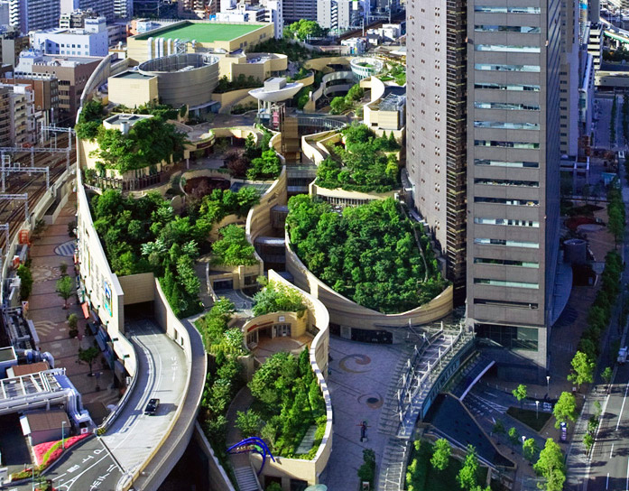

-
1) Tokyo Skytree

Tokyo Skytree is one of the most famous places in Tokyo. It’s a 634-meter-tall broadcasting tower that was initially built in 2008 finished in 2012 with an expense of 75 billion Yen, which is ranked as the #1 tallest tower in the world. As a perfect combination of modern architecture and traditional beauty inspired by the architecture of Japanese ancient temples, Tokyo Skytree looks like a pen, the higher the sharper it is. The tower is covered by transparent and toughened glass. Its first floor is used as a broadcasting office, and the second floor, whose height is about 450 meters, is a great tourist attraction for visitors looking for a feeling of “flying high in the sky”.
Every day, Tokyo Skytree’s color changes in accordance to seasonal features. It attracts about 30 million visitors annually. -
2) Tokyo Metropolitan Government Building
Tokyo Metropolitan Government Building impresses visitors by its strengthened building blocks arranged in a modern way, inspired by the Gothic architecture style of Europe. It looks similar to an enormous electronic chip. Initiated in 1991 with a total expense of 157 billion Yen, this building contains the Japanese power and pride. On its 45th floor, visitors can observe the whole picture of Tokyo through the observatory.
-
3) The Fourth Branch of Sugamo Shinki Bank

First time observing this building, many visitors probably think of a fashion or architecture office instead of a bank office located at a crossroad. A French architect named Emmanuelle came up with a groundbreaking idea of undulating colorful blocks. Also, different blocks are decorated with different flowers, bringing the building’s idea nearer to the nature.
-
4) Nakagin Capsule Tower
Nakagin Capsule Tower is another fascinating tourist attraction famous for its “weird” appearance, which looks like an alien starship arriving in the Earth. This building is located at Shimbashi area, Tokyo, and its building process had been completed in just 30 days in 1970. The tower contains 13 floors with totally 140 10m2 rooms.
-
5) Namba Park in Osaka

Located at the central area of Osaka, Namba Park is actually a big complex that is composed of commerce centers, offices, and an ecological park on the rooftop. There are over 300 plant species with more than 70,000 units totally grown there. Namba Park is an open space with different slopes like a natural canyon and big walking lanes. Namba Park is a bridge connecting Osaka’s busy life with peaceful nature.
-
6) The Ribbon Chapel in Hiroshima
Designed by the architecture company NAP and located near the Bella Vista Sakaigahama Resort, the Ribbon Chapel in Hiroshima is a famous place of wedding celebration. This building attracts every eyesight by its unique appearance like a delicate ribbon spinning around on the air. It is 15,4 meter tall, and it has two spiral stairs representing two souls destined to meet each other and then live together forever.